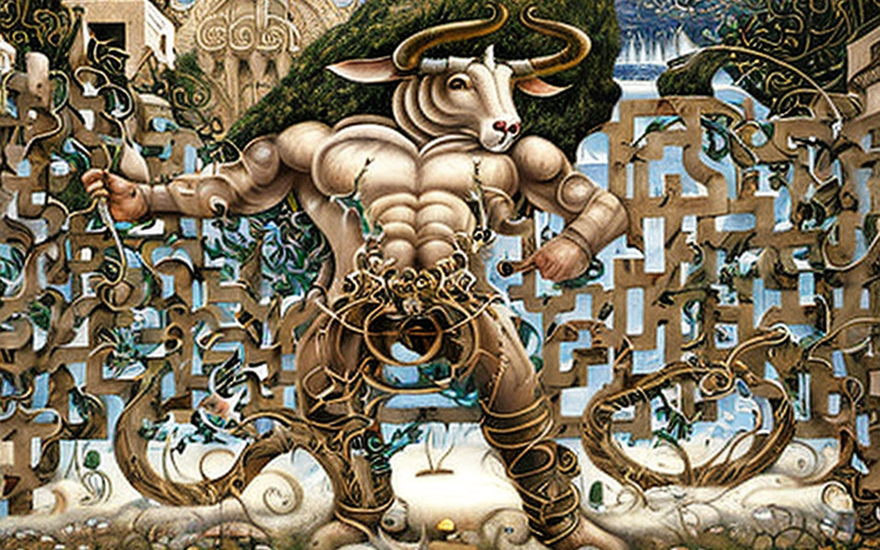
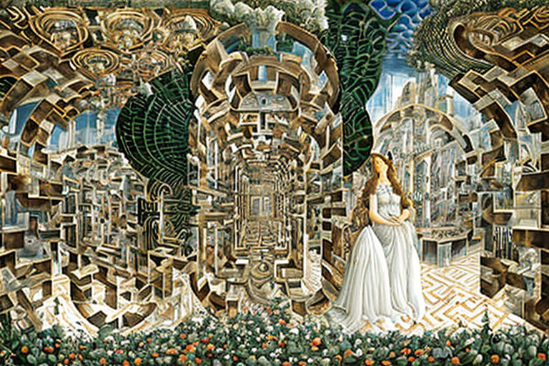
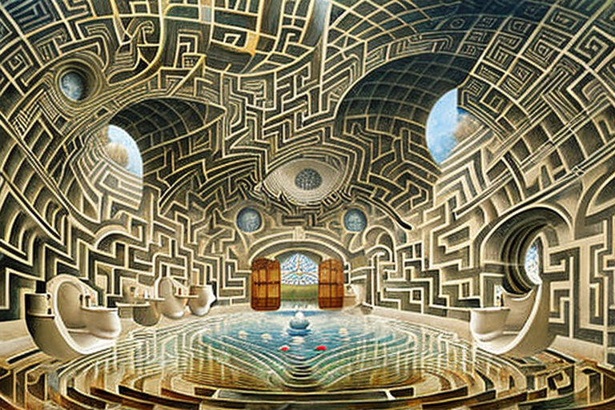

The Minotaur and the labyrinth profit model
HOME
Table of Contents
The beast’s burden

This Minotaur, he was a real beast - half man, half bull, with a temper as fiery as the sun. And he lived in this labyrinth, see, built by some genius architect who was probably tripping on ambrosia when he came up with the design.
Now, this labyrinth was something else. It was huge, intricate, and filled with twists and turns that would confuse even the most skilled navigator. And the Minotaur, he knew it like the back of his hand. He’d been living in there for years, honing his skills and getting stronger by the day.
But there was a catch. See, this labyrinth wasn’t cheap to maintain. It needed constant upkeep, with walls that were always crumbling and paths that needed to be cleared of debris. And that’s where the Minotaur came in.
He paid for the labyrinth’s expensive infrastructure by watching advertisements on the walls. That’s right - every time he made his way through the labyrinth, he’d come across billboards and posters advertising all sorts of products, from chariots to wine to weapons.
The price of monotony

This beast may have been mighty, but he wasn’t without his flaws. You see, the Minotaur had a bit of a blind spot - he never visited the unpopular corners of the labyrinth.
Why, you ask? Because those corners were filled with debris, stacked up like a mountain of trash. The Minotaur couldn’t be bothered to clear it out, and so he avoided those areas altogether.
But those unpopular corners of the labyrinth were a problem for the advertising model that kept the labyrinth up and running. You see, not many eyes were watching the advertisements there, which meant that the revenues from those areas were low.
The Minotaur was a savvy beast and he knew that he needed to find a way to make those unpopular corners profitable. So he hatched a plan, a plan that would require the help of the architect who had designed the labyrinth.
He approached the architect and proposed a new idea - a system of mirrors that would reflect the advertisements from the unpopular corners of the labyrinth into the popular corners. The architect was hesitant at first, but the Minotaur was persuasive, and he eventually agreed to the plan.
And so it was that the mirrors were installed, and the advertisements from the unpopular corners of the labyrinth were reflected into the popular ones. The revenues from those areas began to climb, and the Minotaur was pleased.
But his joy was short-lived, for he soon realized that his plan had backfired. You see, the advertisements were now being reflected into every corner of the labyrinth, even the places that the Minotaur frequented. And he began to see the same advertisements over and over again, day after day.
The Minotaur became frustrated and bored, and he longed for something new and exciting.
Invasion of privacy

So there was the Minotaur, minding his own business, trying to navigate the labyrinth and collect his drachmas, when suddenly he starts seeing the same damn advertisement for olive oil every two steps. And he couldn’t escape it, no matter how hard he tried. It was like he was being stalked by this freakin’ bottle of olive oil.
And then it got worse. The Minotaur started noticing that the mirrors were angled in such a way that they could see into the dark corners of the labyrinth, where he liked to go to get some peace and quiet. And he knew that the architect, that slimy son of a cyclops, was probably watching him, spying on him.
It was like the Minotaur had lost all his privacy. He couldn’t even take a dump without feeling like someone was watching him. And then, to make matters worse, that punk Theseus comes waltzing in, thinking he’s hot stuff, ready to slay the Minotaur and take all the credit.
But the Minotaur wasn’t gonna take it lying down. He may have been half-bull, but he had the heart of a lion. He was gonna take down that damn architect, and maybe even Theseus too, if he had to.
The labyrinth’s new pricing

So the Minotaur was pretty pissed off, I mean, who wouldn’t be? He was stuck in this damn labyrinth, being bombarded with ads all day long. And to make things worse, the architect was using those mirrors to spy on him and anyone else who entered the labyrinth, like that dude Theseus. But the real kicker was that the advertising model wasn’t even working.
The revenues from the unpopular corners of the labyrinth were still low, and the Minotaur was barely making enough drachmas to keep the place running. So the architect had an idea. He threw away those damn mirrors and introduced a new pay-as-you-wander-out system. Now, every time someone entered the labyrinth, they had to pay a fee, and every time they found their way out, they’d get a refund.
It was a pretty good system, and the revenues from the labyrinth began to soar. The Minotaur was finally making some serious cash, and he didn’t have to deal with those annoying ads anymore. But there was still one problem. You see, the Minotaur was still living in a damn fishbowl.
Everyone who entered the labyrinth could see him, and he had no privacy at all. So the architect came up with another idea. He built a little hut in the center of the labyrinth, where the Minotaur could live in peace and quiet. It was a small space, but it was all the Minotaur needed. And so it was that the Minotaur finally had some peace and quiet.
He could wander around the labyrinth, collecting drachmas and living his life, without having to deal with those damn ads or the prying eyes of the architect. It was a good life, a simple life, but it was all the Minotaur needed. And he lived happily ever after, or at least until that dude Theseus showed up and ruined everything.
The battle for exit fees

So there’s this guy Theseus, right? He’s on a mission to slay the Minotaur, but he’s lost as hell in this labyrinth. And to make matters worse, he’s getting charged by the step for his little labyrinth adventure. This dude is walking and walking, paying and paying, and there’s no end in sight.
He’s starting to get pissed, like “What kind of bullsh*t is this? I’m trying to kill a freakin’ monster here, and I gotta pay for every damn step I take? This is highway robbery!” But he keeps going, ’cause he’s determined to find that Minotaur and take him down. Finally, after what feels like a million steps, Theseus stumbles upon the Minotaur’s lair.
The beast is waiting for him, ready to fight to the death. Theseus draws his sword and charges forward, and the Minotaur responds with a roar that shakes the walls of the labyrinth. It’s a fierce battle, my dudes. Theseus is dodging left and right, trying to avoid those sharp horns, while the Minotaur is swinging his massive fists like they’re made of stone.
They’re both getting banged up pretty good, and the whole time, Theseus is thinking about how he’s gonna pay for all these damn injuries. But then something strange happens. The architect of the labyrinth appears out of nowhere, and he’s got a proposition for Theseus.
“Listen, man,” he says, “this whole pay-as-you-wander-out thing ain’t working out. I’m thinking we switch to a drachma-paying model, where you pay when you leave the labyrinth. What do you say?”
Theseus is like, “Are you kidding me? You want to change the rules in the middle of the fight?” But he’s also like, “Okay, fine, whatever gets me out of here with my wallet intact.”
So he agrees to the new payment model, and he and the Minotaur continue their battle. And you know what? Theseus ends up winning. He slays the Minotaur and emerges from the labyrinth victorious. And he’s feeling pretty damn good about himself, until he realizes that he’s still gotta pay the damn exit fee.
“Goddammit,” he mutters under his breath, handing over the drachmas. “This better be the last time I ever set foot in a damn labyrinth.”